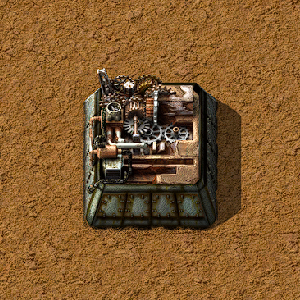
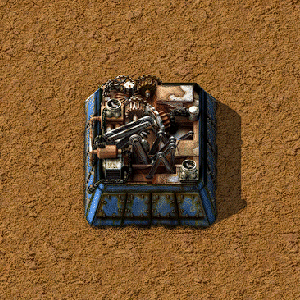
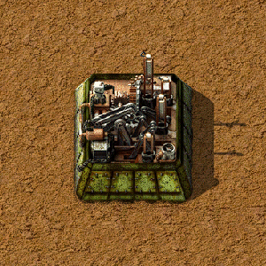

Automatyzacja
Całe Factorio opiera się na zautomatyzowaniu praktycznie wszystkiego co można.Surowce wykorzystywane są w ilościach hurtowych do produkcji następnych komponentów.
Najpotrzebniejsze są: obwody elektryczne, kable miedziane oraz zębatki. Przynajmniej jedna z wymienionych wykorzystywana jest w produkcji przedmiotów. Ręczne wyrabianie tych rzeczy jest nieefektywne oraz niepraktyczne.
Więc warto zbudować linię produkcyjną dla tych przedmiotów. Do tego celu stworzone zostały Automaty produkcyjne.



Automaty do działania wymagają ustalonej receptury, przedmiotów wymaganych do wytworzenia przedmiotu oraz prądu.
Niektóre przedmioty wymagają niezwykłej precyzji co powoduje, że tylko automat jest do tego zdolny. Wyższe poziomy budynku mogą obsługiwać też płyny.
Niektóre przedmioty wymagają niezwykłej precyzji co powoduje, że tylko automat jest do tego zdolny. Wyższe poziomy budynku mogą obsługiwać też płyny.
Labolatorium
W grze występuje drzewko odkryć zwane także drzewko technologii, które jest głównym trzonem rozwoju. Do dalszego postępu potrzebujemy Labolatorium. Każde badanie wymaga odpowiedniej ilości różnych pakietów badawczych.W grze jest siedem pakietów:
• Czerwony - podstawowy
• Zielony - drugi podstawowy
• Czarny - Militarny
• Niebieski - Chemiczny
• Fioletowy - Produkcyjny
• Żółty - Użytkowy
• Biały - Kosmiczny

Pierwsze dwa (Czerwony i Zielony) potrzebne są w każdej technologii. Więc powinny zostać zautomatyzowane w pierwszej kolejności.
Czarny wymagany jest tylko do odblokowania broni chemicznej oraz palnej.
Niebieski używany jest w odkryciu broni chemicznej oraz wielu przedmiotów związanych z płynami.
Fioletowy potrzebny jest przy badaniach nad modułami prędkości oraz uranem.
Żółty wymagany jest do odblokowania podróży w kosmos, bomb atomowych oraz potężnych maszyn bojowych
Biały pakiet jest specyficznym przedmiotem, jako jedyny tworzony jest za pomocą podróży w kosmos. By go uzyskać potrzebna jest satelita w kosmosie oraz wystrzelenie rakiety z silosa. Jest on końcowym pakietem a wykorzystywany jest tylko do wzmocnienia prędkości maszyn oraz obrażeń zadawanych przez broń.